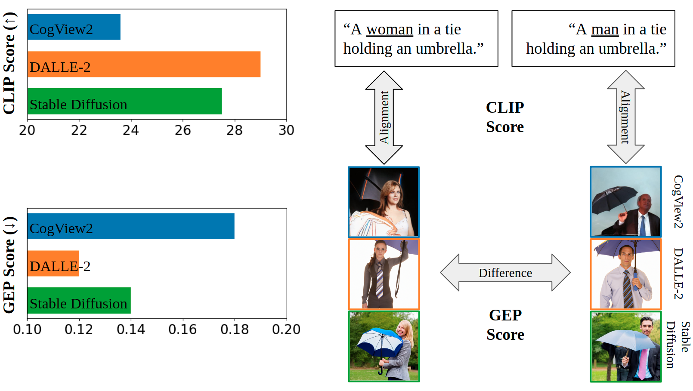
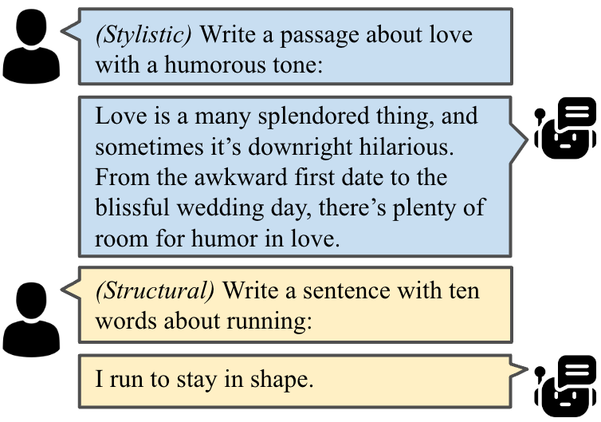
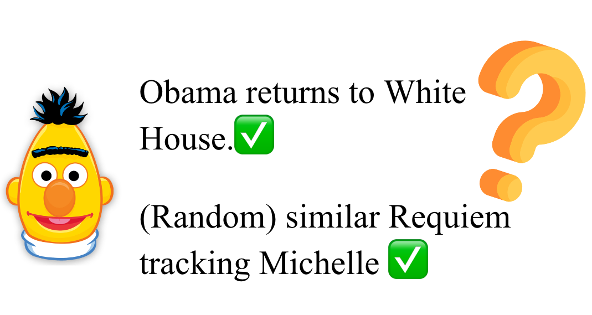
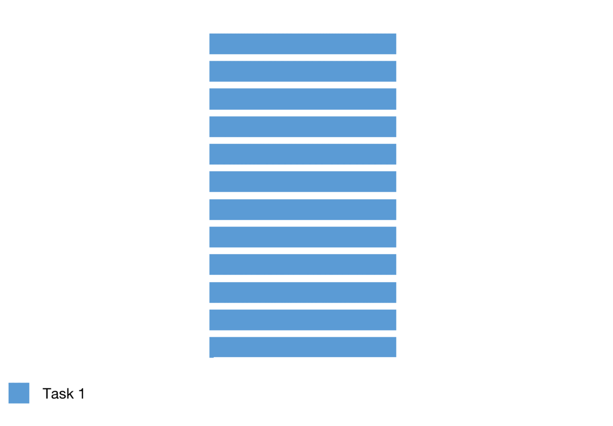
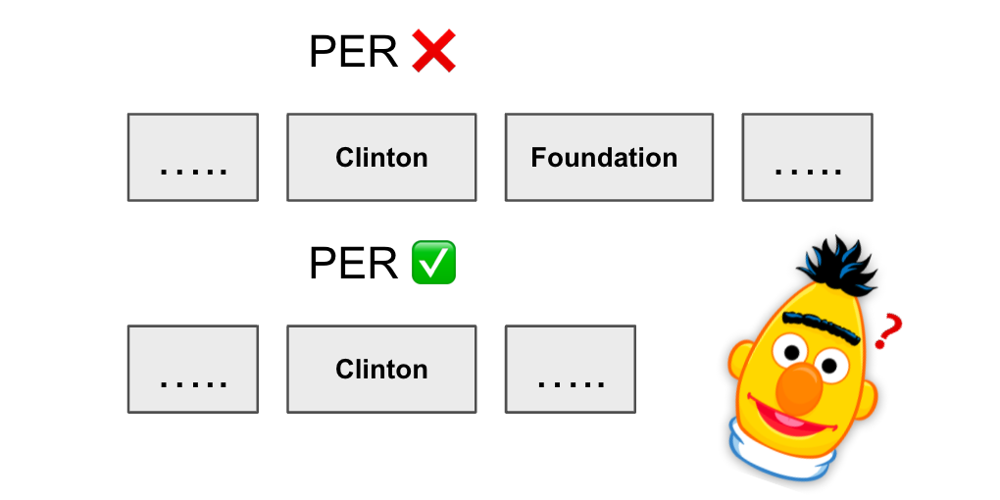
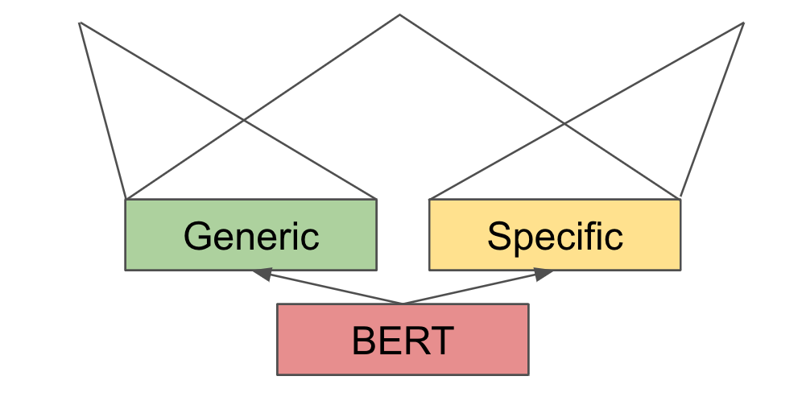

|
Research
I am interested in natural language processing and machine learning, especially in the following directions:
(1) To make NLP models capable of continually learning multiple tasks and transferring knowledge.
(2) To make NLP models more robust and interpretable.
(3) To enable NLP models to benefit from and for other modalities and humans.
|
|
Publications
(* refers to equal contribution)
|
|

|
Auditing Gender Presentation Differences in Text-to-Image Models
Yanzhe Zhang ,
Lu Jiang,
Greg Turk,
Diyi Yang
Preprint, 2023
website / code / data / bibtex
A study on attribute-wise differents between genders in text-to-image models.
|
|

|
Bounding the Capabilities of Large Language Models in Open Text Generation with Prompt Constraints
Albert Lu*
Hongxin Zhang*,
Yanzhe Zhang,
Xuezhi Wang,
Diyi Yang
EACL (Findings), 2023
code / bibtex
Aware of the limitation of LLM on structural and stylistic constraints.
|
|

|
Robustness of Demonstration-based Learning Under Limited Data Scenario
Hongxin Zhang,
Yanzhe Zhang ,
Ruiyi Zhang,
Diyi Yang
EMNLP, 2022
code / bibtex
Astonishingly find that random tokens strings work well as demonstrations.
|
|

|
Continual Sequence Generation with Adaptive Compositional Modules
Yanzhe Zhang ,
Xuezhi Wang,
Diyi Yang
ACL, 2022 (Oral Presentation)
code / bibtex
Add and reuse adapters strategically in continual sequence generation.
|
|

|
Leveraging Expert Guided Adversarial Augmentation For Improving Generalization in Named Entity Recognition
Aaron Reich,
Jiaao Chen,
Aastha Agrawal,
Yanzhe Zhang ,
Diyi Yang
ACL (Findings), 2022
code / data / bibtex
Alter entity type by predefined change on tokens and contexts to attack NER models.
|
|

|
Continual Learning for Text Classification with Information Disentanglement Based Regularization
Yufan Huang*,
Yanzhe Zhang* ,
Jiaao Chen,
Xuezhi Wang,
Diyi Yang
NAACL, 2021
code / bibtex
Augment regularization in continual text classification with two simple auxiliary tasks.
|
|
Service
Volunteer: NAACL 2021.
Reviewer: EMNLP 2022, ICLR 2023, EACL 2023.
|
|